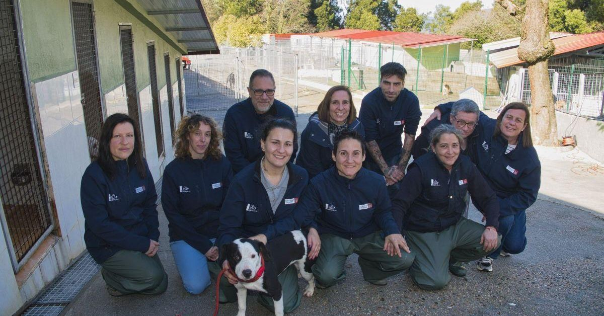

Una década y media de crecimiento
2010
La Fundación
Constitución oficial de la asociación en una nave cedida por el Ayuntamiento, con capacidad para 20 animales.
·


El refugio nació el 14 de marzo de 2010 por uniciativa de un grupo de vecinas de Gijón que ya recogían animales abandonados en sus propias casas.
"De cuidar animales en casa a tener un refugio con más de 1.200 rescates."
- Marta Suárez, Coordinadora general
Constitución oficial de la asociación en una nave cedida por el Ayuntamiento, con capacidad para 20 animales.
·